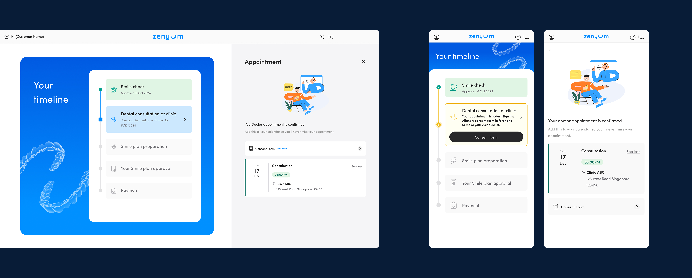

Personal treatment timeline to track patient’s sales journey and upcoming steps.
Digitalizing Zenyum’s offline sales experience to give patients a smoother, more transparent journey from consultation to treatment.

Personal treatment timeline to track patient’s sales journey and upcoming steps.
Online treatment plan review and approval.
One major challenge was managing the shift from high-touch sales to a self-serve experience. Offline sales teams could explain value in real time, and tailor discounts or bundles to drive conversion.
Digitally, we needed to reinforce key decision factors, maintain pricing transparency, and provide access to a sales rep when needed. We also leveraged event tracking to support sales in re-engaging patients.